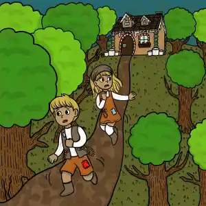

Once upon a time a brother and sister named Hansel and Gretel lived in a hut in the woods with their father. Their father was a poor woodcutter. His wife, their mother, had died when the two children were very young. Their father thought he would not be lonely anymore when he finally re-married. But the new stepmother made life very hard for Hansel and Gretel. The children were not allowed to eat until after the stepmother had taken everything she wanted off the plates. Most of the time, there was only a crust of bread left. And all day long were hard chores for them to do.
Hansel and Gretel tried to tell their father about this but he would not hear of it. It seemed the only one he would listen to was his wife. And all the stepmother talked about was how much trouble it was to have children in the hut, and how much she wished they would go away forever.
part 2
Each day there was less and less food for the boy and girl to eat. Yet the stepmother gave them more and more hard work to do. One day Gretel begged her father, “Please, Father! All day long we work hard and we’re hungry!” But the stepmother slapped her face. “You ungrateful brats!" she yelled. "You will eat us out of house and home!”
That night the two children were not allowed to sleep in the hut. Outside in the cold, they shivered and tried to keep each other warm. Winter was coming, and the clothes they wore were so thin it felt almost as if they had no clothes on at all.
part 3
The next morning when the sun rose, Gretel turned to her little brother. “Hansel,” she said, “we cannot stay here. We must escape now, today, into the woods! Surely we will find more to eat when we are on our own than what we get here at home.”
“Do you think?” said Hansel. "But what if we get lost?”
“We won’t!” said Gretel. “I will take bread. We will drop breadcrumbs behind us. If we have to, we can follow the crumbs back home.”
part 4
And so the two of them went off into the woods and left their hard life behind.
They went deeper and deeper into the woods. Gretel was careful to drop one crumb and then after a bit, another.
But alas! They looked and looked for any sign of something to eat - an apple tree, pear tree, some nuts on the ground, or even dried-up berries. There was nothing to eat! They got hungrier and hungrier. At last, poor Hansel and Gretel knew they must return to their hut or they would surely starve. They would just need to find the breadcrumbs and that would lead them home. Yet when they looked for breadcrumbs, there were none to be found - all the breadcrumbs were gone!
A bird whooshed up into the air and in its beak was a large crumb. Hansel and Gretel were struck with grief – the birds must have taken all their breadcrumbs! A wolf howled in the distance. The sun was setting. Hansel and Gretel were lost and hungry. Now they were scared, too.
part 5
“Gretel,” whispered Hansel in fear, “what will we do?” She did not know what to say. All she could do was to hug her little brother. Each minute it was getting darker and darker. Again, a wolf howled in the distance.
All of a sudden, Gretel saw a small light shining far away. Could it be someone's hut this deep in the woods? “We must find out!” cried Gretel. “Maybe whoever lives there is kind and will take us in.”
The two children sped as fast as they could to the light.
When they got closer, they could not believe their eyes! If you can imagine – from top to bottom the hut was made all of candy! From its gingerbread roof, with frosting all over the walls, and with candies tucked into the frosting, what a sight to see!
“Gretel!” Hansel cried out. Before Gretel could say: “I bet it will be okay if we have just a little taste,” both of them were already biting off small chunks and licking the sweet candy.
A sharp voice!– “WHO is nibbling on my house?” Hansel and Gretel spun around. An old witch!
Stunned, Gretel could only curtsy. "If you please, ma’am,” she said, as sweetly as she could. “There was so much candy on your house. And we are so hungry!”
“You have that right, MY house!" snapped the witch. Her voice dropped. "Well then,” said the witch in a gentler tone, “come inside. I'll get something for you to eat.”
Hansel and Gretel looked at each other in delight. They skipped into the witch’s hut.
They skipped into the witch's hut.
A fine meal of soup and bread. As they licked the last crust of bread and looked around the hut, what the brother and sister saw made their hearts turn cold. Piles and piles of bones in the corners! Yet the two children were very tired, and so they slept.
The next morning when they woke, Hansel found himself locked in a cage. The witch roared, “That's where your brother will stay! Every day I will fatten him up. Soon he will make me a fine dinner!” She laughed and laughed, rubbing her hands with glee. “Till then,” she said sharply to Gretel, “you will work for me.”
part 6
Indeed, Hansel was well fed and Gretel worked hard all day doing chores for the witch.
Each morning the witch said to the boy, “Show me your finger. I will feel how plump you are getting.” For the old witch could not see well. Hansel held out his finger as he was told. The witch smiled when she felt how plump he was getting.
“Gretel,” Hansel whispered in fear. “What are we to do? Soon I will be plump enough and the witch will want to eat me!” His sister wished she had a plan, but could not think of anything.
"Gretl," Hansel whispered in fear. "What are we to do?"
One night when the witch was sleeping, Gretel had an idea. She picked up a bone from one of the piles on the floor and woke her brother. “Hansel,” she said, “the next time the witch asks to see your finger, hold out this bone to her instead.”
part 7
The next morning, he did just that. “Hmph!” said the witch, touching the bone and thinking it was the boy’s finger. “This is going to take longer than I thought!”
“At least I have more time,” Gretel thought. But still, she could not think of any way they could get out of there.
Each morning when the witch said, “Show me your finger,” Hansel held out the thin bone. One day the witch yelled, “I will not wait another day! The boy will be my dinner tonight, no matter how skinny he is!” The witch ordered Gretel to start the fire in the oven at once. She must get it very hot. Gretel worked as slowly as she could. Why was the witch looking at her with such a sly smile?
part 8
“Be a dear,” said the witch with a slow grim. “Go inside the oven, won’t you? Tell me if it is hot enough.”
Gretel’s heart skipped a beat. If she did that, the witch could push her inside and she would eat them both!
She looked down. “I am not sure how to tell.”
"Go inside the oven, won't you?"
“Nonsense!” said the witch. “Nothing could be easier. Just go in!”
“Um,” said Gretel slowly, “please show me first?”
“Stupid girl!” snapped the witch. Mumbling and grumbling, she stepped in the oven. The moment the witch was inside Gretel quickly slammed the door.
"Gretel!” Hansel cried out. “You saved us!”
The sister tried to think fast. “Where is that key to your cage?” She looked and looked. At last she found it at the bottom of a vase. She freed her brother from the cage right away. Then she went back to that vase. For what had she felt under the key? Why, the vase had precious jewels inside!
Then she went back to that vase.
With their pockets filled with the jewels, they ran outside as fast as they could.

part 9
In the daylight they soon found a small path and followed it. It led to a wider path and that path led to a road. They waited by the roadside hoping someone would ride by. When a horseman trotted up, Hansel and Gretel waved their hands. When the horseman stopped, the children offered one of the small jewels and the horseman was happy to give them a ride home.
When the brother and sister opened the door to their home, their father was wild with joy to see them. He had worried and looked for them night and day since they had vanished. They learned their stepmother died very soon after they left. For many years to come, Hansel and Gretel lived very happily with their father in the hut in the woods.